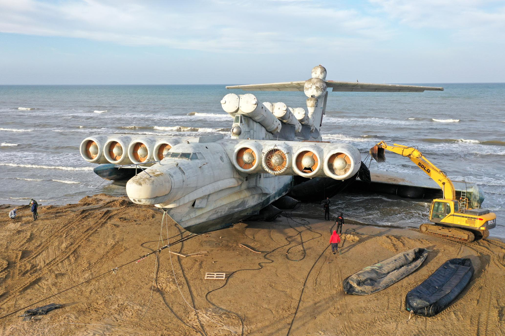

Caspian Sea Monster
On June 22, 1966, the completed KM began transportation along the Volga River to the testing grounds
on the Caspian Sea near the town of Kaspiysk. It was transported from Gorky along the river in secret,
covered in camouflage and moving only at night. The aircraft's first flight was on October 16, 1966, performed
by Vladimir Loginov and Rostislav Alexeyev himself, which was very unusual as most Soviet aircraft designers never
piloted their own creations. All the work was conducted under patronage of the Ministry of Shipbuilding Industry.
Testing showed the KM to have an optimum (fuel efficient) cruising speed of 430 km/h (267 mph, 232 knots), and a maximum
operational speed of 500 km/h (311 mph, 270 knots). The maximum speed achieved was 650 km/h (404 mph, 350 knots), although
some sources claim up to 740 km/h (460 mph, 400 knots).
The KM was at first seen as a promising vehicle specialized for use by military
and rescue workers but its design caused many difficulties; progress slowed and Alexeyev moved
on to other ekranoplan projects. It was tested on the Caspian Sea for 15 years until 1980, when it was destroyed
following a crash caused by pilot error. There were no human casualties, but the KM was damaged and no attempts
were made to save it, it being left to float before eventually sinking a week later. The KM was deemed too heavy
to recover and has remained underwater at the crash site ever since, with no plans to build a second ever made.
However, the KM later became the basis for the Lun-class ekranoplan developed by the Central Hydrofoil Design Bureau
in the 1980s, which saw one example, the MD-160, enter service with the Soviet Navy and later the Russian Navy before
being decommissioned in the late 1990s.

© Website created with Farid Huseynli